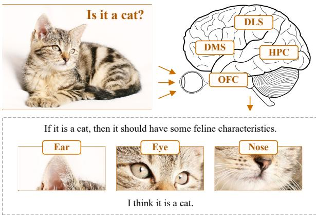

arXiv Thu batch; unlabeled VLM training · P2 · 2026-07-11
BUS：它把 VLM reasoning 训练信号做成无标签 self-supervised 形式，适合作为视觉-语言自监督训练线的参考
把 self-reflective reasoning 的训练从大量标注数据转向 unlabeled visual tasks，并兼容 SFT/RL。
编号2607.07361
优先级P2
类别arXiv Thu batch; unlabeled VLM training
会议arXiv Thu batch; unlabeled VLM training
方法先验证 mainstream VLM 是否具备 backward prediction 能力，再用 Brain-inspired Unsupervised Self-reflection 在无 ground-truth labels 数据上训练 VLM 做 backward prediction 并产生显式学习信号。
来源arXiv / OpenReview
先说结论。它把 VLM reasoning 训练信号做成无标签 self-supervised 形式，适合作为视觉-语言自监督训练线的参考。 把 self-reflective reasoning 的训练从大量标注数据转向 unlabeled visual tasks，并兼容 SFT/RL。


核心问题
它把 VLM reasoning 训练信号做成无标签 self-supervised 形式，适合作为视觉-语言自监督训练线的参考。
方法拆解
先验证 mainstream VLM 是否具备 backward prediction 能力，再用 Brain-inspired Unsupervised Self-reflection 在无 ground-truth labels 数据上训练 VLM 做 backward prediction 并产生显式学习信号。
主要贡献
把 self-reflective reasoning 的训练从大量标注数据转向 unlabeled visual tasks，并兼容 SFT/RL。
实验看点
摘要称在 8 个复杂视觉任务 benchmark 上提升 base model，并验证 backward prediction 对 VLM reasoning 关键。
局限与读法
重点在 reasoning，而非纯视觉 encoder；需要检查无标签数据构造和“backward prediction”是否真正依赖视觉证据。